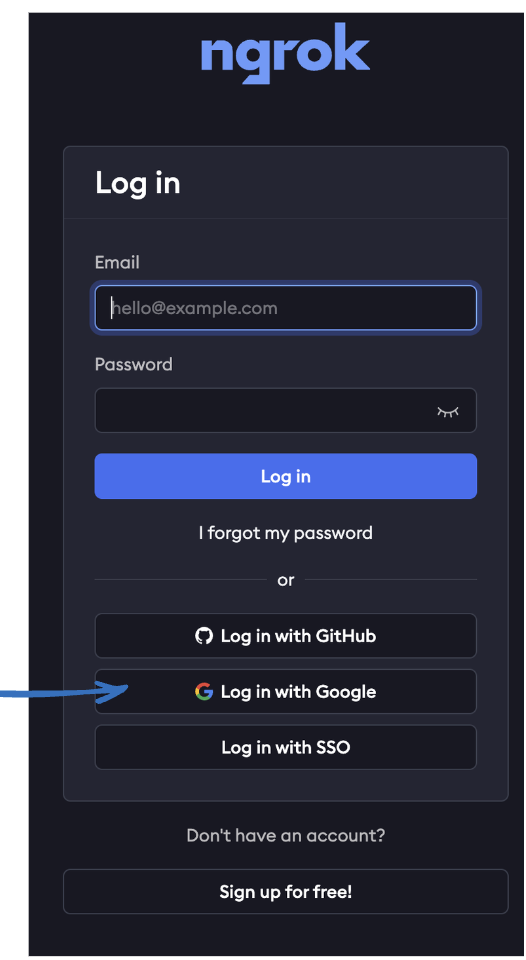

GenAI- Frameworks
(also explai langchian- langsmith - then show Fusion MultiQuery, raptor)
In the previous sections of this lab, we started by exploring basics of neural networks/tokenization, which are key to understanding how modern AI models, particularly large language models (LLMs), operate. We moved on to embeddings and vector databases, which play a vital role in how these models represent and retrieve information.
We also looked into the concept of context windows and how they influence model performance. To address some of the limitations inherent in traditional context windows, we introduced Retrieval Augmented Generation (RAG). This approach enables models to dynamically retrieve relevant information, significantly improving their ability to generate accurate and contextually appropriate responses. To make you understand better, we even built a quick RAG application. Additionally, we touched on multimodal RAG, which takes this a step further by enabling the model to process and integrate information from multiple sources, such as text, images, and more, making it even more versatile.
While we’ve covered the basics, it’s crucial to recognize that the field of AI is rapidly advancing. Companies like OpenAI, Mistral, Google, Meta, and others are in a race to develop the most sophisticated large language models (LLMs).
However, effectively using these powerful LLMs in real-world scenarios involves more than just sending and receiving API requests. Challenges such as fine-tuning models, integrating them with third-party systems e.g. Webex, and ensuring they perform well in complex environments require more than what LLMs alone can offer.
This is where GenAI frameworks come into play, providing the essential infrastructure to bridge the gap between raw LLM capabilities and practical, scalable AI solutions. There are numerous frameworks available for use.
The question of which framework to choose ultimately depends on your specific preferences and needs. Many of these frameworks have overlapping functionalities. In this section, we'll focus on LangChain, exploring what it is and how it can be used to create AI-powered applications.
Langchain
LangChain is an open-source framework that enables developers to integrate large language models (LLMs) with external data sources and computational resources. Available as a Python, JavaScript, or TypeScript package, it offers a versatile pipeline abstraction that can be used for various purposes, from creating AI enabled applications to managing data ingestion from external sources.
While LLM like (GPT) has impressive general knowledge, LangChain is essential for retrieving information from your own documents or fine-tuning models for specific tasks. It allows you to connect LLMs to your data sources, enabling actions like sending messages to a Webex Space. The process involves breaking your data or documents into smaller chunks and storing them in a vector database as embeddings. LangChain supports various vector stores, such as Chroma, Faiss, and Cassandra e.t.c making data retrieval and action-taking both efficient and seamless. More info on langchain can be found here.
More info about Embeddings can be found in Task4
Below is a summary from a Langchain blog that outlines the most commonly used LLMs, embeddings, and vector stores.
The beauty of Langchain lies in its ability to provide a comprehensive ecosystem, regardless of the LLM model you choose to work with. Within the Langchain ecosystem, there's a tool called Langsmith, which is designed for monitoring and debugging your applications, think of it as LLM ops. If you're building applications as APIs, Langchain offers Langserve (create services in the form of APIs). Additionally, the ecosystem includes agents, chains, retrievers, and LLM tools, making it a versatile platform for various NLP tasks.
Note: Chains are a sequence of steps or operations that are linked together to achieve a particular task. Each step in the chain can involve various processes, such as invoking a language model, performing a calculation, calling an external API, or manipulating data. Chains allow developers to structure these steps in a way that the output of one step becomes the input of the next, creating a pipeline of operations.
Note: The above image was obtained from Langchain
Langchain - UseCase-1
Note: Make sure you have created a Langchain account as explained in the "Getting Started with LangChain" section in Task1
Let's start building chatbot application using LangChain, I'll guide you through the basic steps.
With LangChain, when creating an application, you have the flexibility to use either paid LLMs or open-source LLMs. One way to integrate open-source LLMs is through Hugging Face, but since we're focusing on LangChain, we'll explore how this can be done within its ecosystem.
We’ll build a chatbot using both paid models (like OpenAI) and open-source LLMs. LangChain provides modules that can seamlessly interact with both paid services and open-source models, allowing you to create versatile and powerful applications.
In this example, we'll explore the use of Langchain and Langserve, starting with the installation of essential libraries like langchain_openai, langchain, and langchain_core. We'll demonstrate how to leverage Langserve for managing large language models (LLM) operations. Furthermore, I'll show you how to utilize Streamlit, a server-based application, to interactively visualize and interact with your code. Given the challenges of running Streamlit directly on Google Colab, we'll deploy NGROK to facilitate executing and accessing our code through a web interface.
Task 1: Log into the Lab Environment
- Open Google Colab and create a new notebook or use an existing one . Click on "File" > "New notebook". Please refer to the following section to create Google Colab account.

- Make sure you are connected to a runtime. For this task, you can use the CPU as the runtime environment.

Set OpenAI token
Note: Skip this step if you have already created the OpenAI account. If this is the first module you working with please, create an account from the OpenAI official website.
- Create a new project API key by browsing to API Keys web page. Select Create new secret key. The API key is automatically generated. Save the APi Key as we will be using it in the later steps .

- Within your existing Google Colab notebook navigate to the new “Secrets” section in the sidebar.
-
Click on “Add a new secret.” Enter the name example: OPENAI_API_KEY and value of the secret(the API key created above). Note: The name is permanent once set.
-
The list of secrets is global across all your notebooks.
-
Use the “Notebook access” toggle to grant or revoke access to a secret for each notebook.
Set Langchain tokens
Note: Make sure you have created a Langchain account as explained in the "Getting Started with LangChain" section in Task1
- Copy your Langchain Key and save it
- Within your existing Google Colab notebook navigate again to the new “Secrets” section in the sidebar. Click on “Add a new secret.” Enter the name example: LANGCHAIN_API_KEY and value of the secret(the API key created in Langchain).

Set NGROK
-
Browse to NGROK and click on Login
-
I’ll be using the "Login with Google" option to access my account, but feel free to choose the login method that works best for you.

- Get your NGROK auth key

Note: Since we are using a free Ngrok account, we can only run up to 3 tunnels simultaneously. If you need to terminate any active tunnels, please use the following steps
!pkill ngrok
Configuration
- Lets start by installing all the necessary packages
1 | |
- We will import libraries
1 2 3 4 5 6 7 8 9 10 11 | |
- Lets start by configuring the environment variables. We will use and define Langserve for our LLM ops
1 2 3 4 5 6 | |
Note: Due to the challenges of running Streamlit directly on Google Colab, we'll use NGROK to enable the execution and access of our code via a web interface. The code below is for your understanding or if you're running it as Python packages in your own environment. To continue and run the code in this lab or on Google Colab, please proceed and copy the code from Configuration1 section.
- (Optional) As we creating a simple chatbot application lets create our prompt
1 2 3 4 5 6 | |
- (Optional) Lets define Streamlit Framework
1 2 | |
- (Optional) We will initialize the Language Model and set-up the Output parser
1 2 | |
- (Optional) Langchain offers features that allow us to connect various components into a seamless workflow, known as chains. So far, we have created a chat prompt template, initialized the LLM (Language Model), and set up an Output Parser. Now, let's combine all these elements.
1 | |
- (Optional) Lets give our input as question and pass it to our chain
1 2 3 4 | |

Configuration1
-
Running Streamlit apps directly within Google Colab can be challenging due to the need for a continuous web interface, which is not natively supported in Colab's environment. To address this, we will use NGROK, which creates a secure tunnel to make the Streamlit app accessible via a web interface.
-
The code will start by creating a Streamlit application using a prompt template, a language model (LLM), and an output parser. These components are combined into a chain to process user input and generate responses using GPT-4o model. The app will prompt the user to input a query and then processes it through the chain, displaying the generated response in the Streamlit interface. We will save Streamlit app code to a file (app.py), and a subprocess is started to run the app.
1 2 3 4 5 6 7 8 9 10 11 12 13 14 15 16 17 18 19 20 21 22 23 24 25 26 27 28 29 30 31 32 33 34 35 36 37 38 39 40 41 42 43 44 45 46 | |
- Since we're using Langserve for llm-ops, let's log in and explore its features there.
This dashboard provides a summary of the performance, usage, and cost metrics for the "WebexOne" project within the last 7 days. It offers insights into how frequently the project has been run, the efficiency (in terms of error rates and latency), and the associated costs, helping users to monitor and optimize their LLM (Large Language Model) operations.
Enhancing Our Streamlit App to Send Messages to a Webex Space
We’ve seen how simple it is to interact with LLM and create an application using Langchain + Streamlit. Now, let’s take it a step further by modifying the application so that the responses are not only displayed in the Streamlit interface but are also sent directly to a specific Webex space.
Note: Ensure you have the Webex Bearer Token and Space ID available. If you don't have them, please reach out to your lab proctor.
- let's modify our code to send the generated responses directly to a Webex space. This will enable real-time collaboration and communication with team members through Webex, enhancing the utility of our AI applications.
1 2 3 4 5 6 7 8 9 10 11 12 13 14 15 16 17 18 19 20 21 22 23 24 25 26 27 28 29 30 31 32 33 34 35 36 37 38 39 40 41 42 43 44 45 46 47 48 49 50 51 52 53 54 55 56 57 58 59 60 61 62 63 64 65 66 67 68 69 | |
Building using Ollama Models(opensource) - OPTIONAL
Note: The code below will work if you are running Ollama locally on your machine as explained in Task1
In this example, we're leveraging LangChain to build an AI assistant using the LLama3 model, accessible through the Ollama API. The assistant is designed to help with queries and is implemented using Streamlit, which provides a user-friendly interface as shown above.
Note: Make sure you are running Ollama locally on your machine, as explained in Task1, to ensure the Llama3 model is properly accessible.
| Optional Code | |
|---|---|
1 2 3 4 5 6 7 8 9 10 11 12 13 14 15 16 17 18 19 20 21 22 23 24 25 | |
Langchain - UseCase-2 - Advanced Rag
In Task5, we explored the basics of a simple Retrieval-Augmented Generation (RAG) application, where we utilized similarity search to find and retrieve information from our database. While this approach is effective for specific, straightforward use cases, it does come with some limitations among them being lack of flexibility.
One of the drawbacks of relying solely on similarity search is that it doesn’t easily accommodate more complex workflows or integration with additional tools. It’s powerful for direct matches but can struggle when the task requires multi-step logic, advanced filtering, or a combination of different data sources.
LangChain’s retrievals and chains, on the other hand, provide a more versatile and scalable framework. They enable the creation of sophisticated RAG applications by allowing you to define workflows that can incorporate multiple retrieval strategies, conditional logic, and integration with other LLM's or APIs.
Let’s now shift our focus towards creating an advanced RAG application by leveraging the capabilities of LangChain’s chains and retrievers. This will not only improve the flexibility and power of our application but also open up new possibilities for handling complex queries and delivering more refined results.
Chain: A chain in LangChain is like a sequence of tasks that you want to accomplish step by step.
Retriever: is like a search engine inside your application. Its job is to find and pull out the most relevant information from a vector database or a collection of documents.
A retrieval chain is when you combine the power of both chains and retrievers.
Task 1: Log into the Lab Environment
-
Open Google Colab and start a new notebook, or you can use an existing one. Ensure that your OpenAI and LangChain tokens are already set up and activated for this notebook, as described in Use Case 1.
-
Let's load our PDF files into Google Colab. For this example, we can use the article titled "Cisco Preferred Architecture for Webex Calling". You can download the article here as we will be using in the next step.
-
Within Google Colab, Click on Folder and create a new folder called "data"

- Click on [...], select Upload
- Choose your webex_calling.pdf file and click Open
Configuration
- Lets start by installing all the packages
1 | |
- Lets start by configuring the environment variables. We will use and define Langserve for our LLM ops
1 2 3 4 5 6 | |
- We will import libraries
1 2 3 4 5 6 7 | |
If we examine the RAG pipeline, we typically need to follow these steps
- Lets load our data source
1 2 3 | |
- We will do transformation to break data into smaller chunks
1 2 3 | |
- We will now convert chunks into embeddings and store in Vector database e.g. Chroma
1 2 3 | |
- At this stage, I can query my vector database and retrieve information based on similarity search.
1 2 3 | |
- Let's now combine prompts with chains and retrievers to generate responses based on the prompts. Lets start by defining our LLM
1 | |
Note: You can also use open source models like Ollama using the following code: from langchain_community.llms import Ollama llm=Ollama(model="llama2")
- Let's design our chat prompt templates instead of querying our database using similarity search. We'll be utilizing langchain_core.prompts for this purpose.
1 2 3 4 5 6 7 | |
- Lets create our Chain now. Chains are sequences of operations that process input to produce the desired output. We will use create_stuff_documents_chain
1 2 | |
- Now, let's define our retrievers. As previously mentioned, a retriever is an interface that returns documents based on an unstructured query. It is broader in scope than a vector store, as it doesn't need to store documents, only to retrieve them. While vector stores can serve as the foundation for a retriever, there are other types of retrievers available as well. For more information, you can refer to the documentation [here] (https://python.langchain.com/docs/modules/data_connection/retrievers/)
1 2 | |
- In this step, we'll set up a retrieval chain. This chain will start by taking a user inquiry and passing it to the retriever to fetch relevant documents. The retrieved documents, along with the original inputs, will then be sent to a language model (LLM) to generate a response. For further details on how to implement a retrieval chain, refer to the following doc
1 2 | |
- Now, let's combine our retriever and chain to generate responses:
1 | |
response['answer']
Summary
In this lab, we've built an advanced Retrieval-Augmented Generation (RAG) system. The process begins with a user query, which is passed through a retrieval chain to fetch relevant documents from a vector database. These documents, along with the original query, are then processed by a Language Model (LLM) to generate a detailed and accurate response. This setup allows us to efficiently handle complex queries by combining the strengths of chains, retrieval and language models.